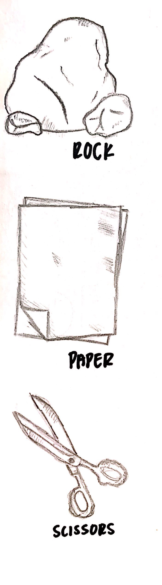

Rock, Paper, Scissors, SHOOT!
HOME

"Rock, Paper, Scissors" is a game loved by many and played by people of all ages. It is a simple game that requires nothing more than one's own hands and another player, and can be played to decide who gets a penalty, who is "it" in a game of tag, even just for fun, and many more!
That being said, the reason why I decided to code a game of "Rock, Paper Scissors" for this computer science project is because of how special the game is! I, along with many of my friends, have fond memories playing the game. However, in the case that you are bored but do not have someone to play with, it'd be really cool to play with the computer instead, which is exactly what the python file is- a game where the user can play "Rock, Paper, Scissors" with the computer!